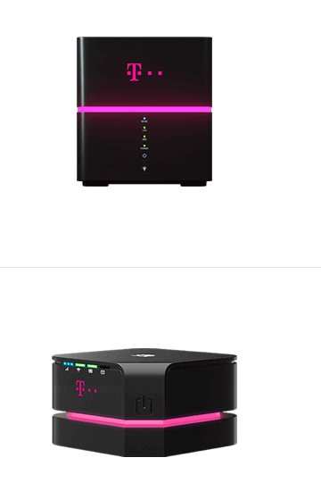
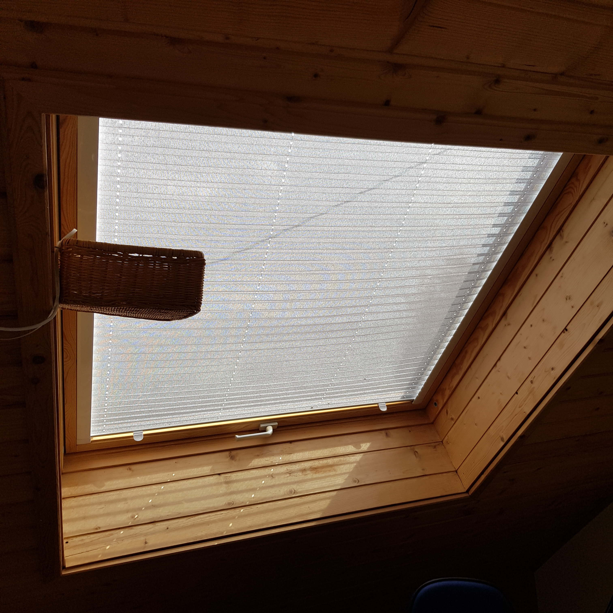
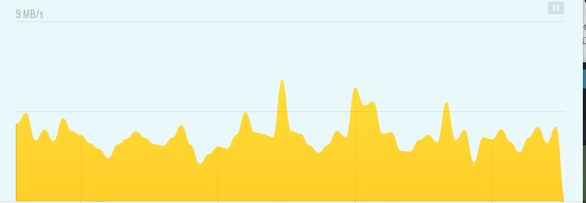

Hi,
ich wollte nachfragen, ob es technische Unterschiede zwischen den 2 Boxen gibt?
ich habe derzeit die kleine, und pendle zwischen 1 und 2 empfangsstrichen dahin.
Das sind 50kb/s-500kb/s.
Ich hoffe, dass sich das mit der großen Box bessern könnte?
Auch habe ich antennen gekauft, aber mit denen wird der Empfang nur schlechter.
Danke LG
Max

Wenn mit den Antennen der Empfang schlechter wird, sind diese falsch ausgerichtet.
Die neue Box kann carrier Aggregation, sprich wenn der Magenta Sender mehrere LTE Bänder nutzt, kann die box diese gleichzeitig verwenden.
Wenn du Antennen gekauft hast, kannst mal bitte posten, welche das sind?
Evtl. stimmen die Bänder nicht oder die Box erkennt die Antenne nicht.
Schreib doch mal mehr, vielleicht können wir dir dahingehend doch noch weiter helfen?
 Danke Christian,
am BIld siehst du welche Antennen ich habe, da steht leider nix vom Hersteller oder dergleichen und das Dachfennster wo ich manchmal 2 Striche Empfang bekomme.
Der Router befindet sich in der Box, mit den Antennen, die ich am Fenster platzieren kann, bekomme ich nur schlechtere Ergebnisse.
Wenn ich ehrlich bin, passt das Antennenkabel auch nur "locker" in den Router.
Danke VG
Hallo Max,
Schreib mir doch mal bitte, was die Box genau für ein Typ ist.
Das kriegen wir schon hin.
Kannst du zwischenzeitlich mal die Box nehmen, dass Fenster aufmachen und die Box soweit die möglich raus halten. Jemand könnte dir da helfen und dann kontrolliere bitte, wie sich der Empfang verhält. Er müsste dann deutlich besser werden, wenn nicht, dann prüfen wir was anderes.
Danke und liebe Grüße, Christian
Bearbeitet von Christian_EHallo Christian,
ich bin nun bei wackeligen 3Mb/S ohne Antenne was schon eine super Verbesserung ist - es gibt auch spitzen bis 6mb/s:

Das Glas so eine einschränkende Wirkung haben kann...
Was meinst du, muss ich durch das Dach bohren für eine Außenantenne, damit das so bleibt?
Box ist Huawei AF22
Danke VG
Bearbeitet von SidJa das hab ich mir gedacht. ? gut so.
Also, wenn du die Möglichkeit hast mit 2 Kabel raus zu kommen, dann kannst du sicherlich noch deutlich mehr raus holen.
Jetzt schau bitte mal nach, ob die Antenne von den Anschlüssen wirklich passt. Ich würde dir raten, eine ordentliche Antenne zu kaufen.
Weißt du, wo dein Sender ungefähr steht? Hast du da Blickkontakt oder befindet sich der Sender von Magenta zumindest in der Richtung, wo das Fenster aufgeht.
Oder andere Frage - hast du am Dach evtl. sogar Blick in weitere Himmelsrichtungen?
LG Christian
Servus, also vom Dachfenster habe ich wenn ich 4 m am dach raufgehe alle Himmelsrichtungen im Blick.
Wo der Sender ist, weiß ich nicht, wenn ich mit der Box ums Haus gehe, winde ich es auch nicht wirklich heraus.
Kannst du mir eine Außen-Antenne Empfehlen, die mit meinem Gerät zusammenpasst und denkst du ich kann mit der größeren Box mehr herausholen?
Danke VG
Ich schau mir das an. Bitte noch zum Geduld. ?
Guten Morgen,
Kannst du mal bitte ein Bild von der Rückseite des Routers machen, damit man die Anschlüsse für die Antenne sehen kann.
Vorschlag- such mal bei einem großen Online-Shop nach folgender Antenne:
Multi-Band LTE / 4G Antenne für 800/1800/2600 MHz - Richtantenne mit bis zu 14dBi Leistungsgewinn, inklusive 10m TWIN-Kabel
Du weißt wahrscheinlich welcher Shop gemeint ist. ? Ich will da mal keine Werbung machen.
Diese Antenne ist eine multiband Antenne und deckt so mal alle gängigen Bänder ab. Ist nur eine Möglichkeit- gibt andere Modelle auch noch aber diese Richtantenne ist gut - sie muss aber in Richtung Sender ausgerichtet werden. Aber am Dach oben sollte das möglich sein, deshalb meine Frage, ob du in alle Richtungen siehst.
Du hast bei deiner Box offenbar den TS9 Anschluss. Damit brauchst du noch ein entsprechendes Kabel oder eine Kupplung.
Das Kabel müsste sein N Stecker auf TS9 Anschluss.
Bearbeitet von Christian_E
Danke dir, sollte ich mich dazu entscheiden, schreibe ich wie es gelaufen ist.
Vielen Dank für die Beratung und Hilfe!
Denkst du die Antenne macht auch im Innenbreich Sinn unter dem Fenster?
VG
vor 29 Minuten schrieb Sid:Denkst du die Antenne macht auch im Innenbreich Sinn unter dem Fenster?
Eher nein, wie heißt es so schön, probieren geht über studieren. Viele Fenster sind mit Metall bedampft, was für LTE schlecht ist.
Nein. Eine Richtantenne sollte unbedingt draußen montiert werden.
Drinnen gibt es nur Reflexionen, das wird nicht ordentlich funktionieren.
Ja sag bitte Bescheid.
LG Christian
Servus,
ich möchte mich nun für eine Richtfunkantenne entscheiden. Dazu brauche ich soweit die MHZ Zahl für meinen Bereich. Weiters muss ich wissen wo die LTE Masten stehen. Hier finde ich bei A1 die Infos, aber nicht bei T-Mobile. Wisst ihr wo ich die Informationen bekommen kann?
Danke!
Oder du nimmst eine Multiband Antenne. Das hat durchaus Vorteile und die sind sehr leistungsfähig.
Du musst nicht genau wissen, wo der Mast ist - da kann ich dir Tricks sagen.
Schreib doch bitte mal, welchen Router du hast.
{kind=link}
{kind=link}
{kind=link}
{kind=link}